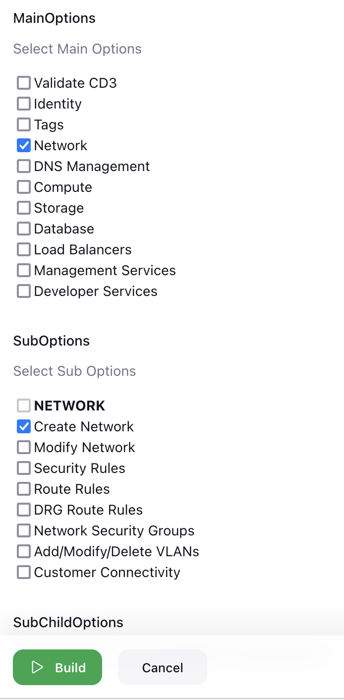
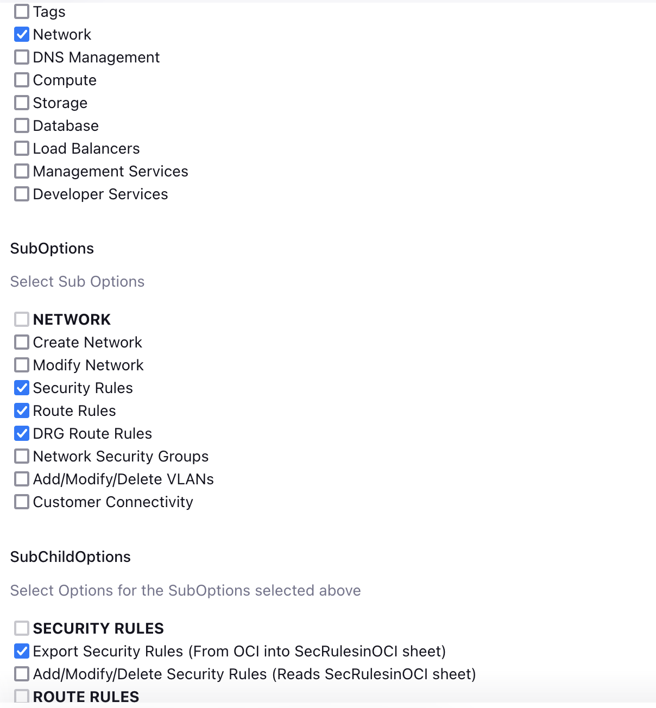

Executing Networking Scenarios using toolkit via Jenkins
Managing Network for Greenfield Workflow
- Create Network
- Modify Network
- Modify Security Rules, Route Rules and DRG Route Rules
- Sync manual changes done in OCI of Security Rules, Route Rules and DRG Route Rules with CD3 Excel Sheet and Terraform
- Add/Modify/Delete NSGs
- Add/Modify/Delete VLANs
- Remote Peering Connections
NOTE-
Create Network
Creation of Networking components using Automation Toolkit involves four simple steps. - Add the networking resource details to appropriate Excel Sheets. - Running the setUpOCI pipeline in the toolkit to generate auto.tfvars. - Executing terraform pipeline to provision the resources in OCI. - Exporting the automatically generated Security Rules and Route Rules by the toolkit to CD3 Excel Sheet.
Below are the steps to create Network that includes VCNs, Subnets, DHCP, DRG, Security List, Route Tables, DRG Route Tables, NSGs, etc.
-
Choose appropriate excel sheet from Excel Templates and fill the required Network details in the Networking Tabs - VCNs, DRGs, VCN Info, DHCP, Subnets, NSGs tabs.
-
Execute the setupOCI pipeline with Workflow as Create Resources in OCI(Greenfield Workflow)
-
Choose option 'Validate CD3' and then 'Validate Networks' to check for syntax errors in Excel sheet. Examine the log file generated at
/cd3user/tenancies/<customer_name>/<customer_name>_cd3validator.log. If there are errors, please rectify them accordingly and proceed to the next step. -
Choose 'Create Network' under 'Network' from the displayed options. Click on Build. 
-
It will show different stages of execution of setUpOCI pipeline and also launch the terraform-apply pipeline for 'network'.
- Click on Proceed for 'Get Approval' stage of the terraform pipeline.
This completes the creation of Networking components in OCI. Verify the components in console. However the details of the default security lists and default route tables are not available in the CD3 Excel sheet yet. Inorder to export that data please follow the below steps:
- Execute the setupOCI.py pipeline with Workflow as Create Resources in OCI(Greenfield Workflow)
- Choose 'Network' from the displayed options. Choose below sub-options: (Make sure to choose all the three optionsfor the first time)
- Security Rules
- Export Security Rules (From OCI into SecRulesinOCI sheet)
- Route Rules
- Export Route Rules (From OCI into RouteRulesinOCI sheet)
- DRG Route Rules
- Export DRG Route Rules (From OCI into DRGRouteRulesinOCI sheet) Click on Build.

This completes the steps for Creating the Network in OCI and exporting the default rules to the CD3 Excel Sheet using the Automation Toolkit.
Go back to Networking Scenarios
Modify Network
Modifying the Networking components using Automation Toolkit involves three simple steps.
- Add/modify the details of networking components like the VCNs, Subnets, DHCP and DRG in Excel Sheet.
- Running the the setUpOCI pipeline in the toolkit to generate auto.tfvars.
- Executing Terraform pipeline to provision/modify the resources in OCI.
Note: Follow these steps to modify Security Rules, Route Rules and DRG Route Rules
Steps in detail:
- Modify your excel sheet to update required data in the Tabs - VCNs, DRGs, VCN Info, DHCP and Subnets.
- Execute the setupOCI.py pipeline with Workflow as Create Resources in OCI(Greenfield Workflow)
- To Validate the CD3 excel Tabs - Choose option 'Validate CD3' and 'Validate Networks' from sub-menu to check for syntax errors in Excel sheet. Examine the log file generated at
/cd3user/tenancies/<customer_name>/<customer_name>_cd3validator.logs. If there are errors, please rectify them accordingly and proceed to the next step. -
Choose option to 'Modify Network' under 'Network' from the displayed options. Once the execution is successful, multiple .tfvars related to networking like
<customer_name>_major-objects.auto.tfvarsand more will be generated under the folder/cd3user/tenancies/<customer_name>/terraform_files/<region_dir>/<service_dir>. Existing files will move into respective backup folders.Note-: Make sure to export Sec Rules, Route Rules, DRG Route Rules to CD3 Excel Sheet before executing this option.
-
It will show different stages of execution of setUpOCI pipeline and also launch the terraform-apply pipeline for 'network'.
- Click on Proceed for 'Get Approval' stage of the terraform pipeline.
This completes the modification of Networking components in OCI. Verify the components in console.
Go back to Networking Scenarios
Modify Security Rules, Route Rules and DRG Route Rules
Follow the below steps to add, update or delete the following components: - Security Lists and Security Rules - Route Table and Route Rules - DRG Route Table and DRG Route Rules
-
Modify your excel sheet to update required data in the Tabs - RouteRulesInOCI, SecRulesInOCI, DRGRouteRulesInOCI tabs.
-
Execute the setupOCI.py pipeline with Workflow as Create Resources in OCI(Greenfield Workflow)
-
Choose 'Network' from the displayed options. Choose below sub-options:
- Security Rules: Add/Modify/Delete Security Rules (Reads SecRulesinOCI sheet)
- Route Rules: Add/Modify/Delete Route Rules (Reads RouteRulesinOCI sheet)
- DRG Route Rules: Add/Modify/Delete DRG Route Rules (Reads DRGRouteRulesinOCI sheet)
Once the execution is successful,/cd3user/tenancies/<customer_name>/terraform_files/<region_dir>. Existing files will move into respective backup folders.
NOTE: This will create TF for only those Security Lists and Route Tables in VCNs which are part of cd3 and skip any VCNs that have been created outside of cd3 execution.
-
It will show different stages of execution of setUpOCI pipeline and also launch the terraform-apply pipeline for 'network'.
- Click on Proceed for 'Get Approval' stage of the terraform pipeline.
This completes the modification of Security Rules, Route Rules and DRG Route Rules in OCI. Verify the components in console.
Go back to Networking Scenarios
Sync manual changes done in OCI of Security Rules, Route Rules and DRG Route Rules with CD3 Excel Sheet and Terraform
Follow the below process to export the rules to the same CD3 Excel Sheet as the one used to Create Network, and to sync the Terraform files with OCI whenever an user adds, modifies or deletes rules in OCI Console manually.
NOTE: Make sure to close your Excel sheet during the export process.
-
Execute the setupOCI.py pipeline with Workflow as Create Resources in OCI(Greenfield Workflow)
-
Choose 'Network' from the displayed menu. Choose below sub-options:
- Security Rules
- Export Security Rules (From OCI into SecRulesinOCI sheet)
- Add/Modify/Delete Security Rules (Reads SecRulesinOCI sheet)
- Route Rules
- Export Route Rules (From OCI into RouteRulesinOCI sheet)
- Add/Modify/Delete Route Rules (Reads RouteRulesinOCI sheet)
-
DRG Route Rules
- Export DRG Route Rules (From OCI into DRGRouteRulesinOCI sheet)
- Add/Modify/Delete DRG Route Rules (Reads DRGRouteRulesinOCI sheet)
Once the execution is successful, 'RouteRulesInOCI', 'SecRulesInOCI', 'DRGRouteRulesInOCI' tabs of the excel sheet will be updated with the rules exported from OCI. And
<customer_name>_seclists.auto.tfvars,<customer_name>_routetables.auto.tfvarsand<customer_name>_drg-routetables.auto.tfvarsfile will be generated under the folder/cd3user/tenancies/<customer_name>/terraform_files/<region_dir> -
It will show different stages of execution of setUpOCI pipeline and also launch the terraform-apply pipeline for 'network'.
- Click on Proceed for 'Get Approval' stage of the terraform pipeline.
This completes the export of Security Rules, Route Rules and DRG Route Rules from OCI. Terraform plan/apply should be in sync with OCI.
Go back to Networking Scenarios
Add/Modify/Delete NSGs
Follow the below steps to update NSGs.
-
Modify your excel sheet to update required data in the Tabs - NSGs.
-
Execute the setupOCI.py pipeline with Workflow as Create Resources in OCI(Greenfield Workflow)
-
Choose 'Network' from the displayed menu. Choose below sub-option:
-
Network Security Groups
- Add/Modify/Delete NSGs (Reads NSGs sheet)
Once the execution is successful,
<customer_name>_nsgs.auto.tfvarswill be generated under the folder/cd3user/tenancies/<customer_name>/terraform_files/<region_dir>/<service_dir>. Existing files will move into respective backup folders. -
It will show different stages of execution of setUpOCI pipeline and also launch the terraform-apply pipeline for 'nsg'.
- Click on Proceed for 'Get Approval' stage of the terraform pipeline.
This completes the modification of NSGs in OCI. Verify the components in console.
Go back to Networking Scenarios
Add/Modify/Delete VLANs
Follow the below steps to update VLANs.
- Modify your excel sheet to update required data in the Tabs - SubnetsVLANs.
-
Make sure that the RouteRulesinOCI sheet and corresponing terraform is in synch with route rules in OCI console. If not, please follow procedure specified in Sync manual changes done in OCI of Security Rules, Route Rules and DRG Route Rules with CD3 Excel Sheet and Terraform
-
Execute the setupOCI.py pipeline with Workflow as Create Resources in OCI(Greenfield Workflow)
- Choose 'Network' from the displayed menu. Choose below sub-option:
-
Add/Modify/Delete VLANs (Reads SubnetsVLANs sheet)
Once the execution is successful,
<customer_name>_vlans.auto.tfvarswill be generated under the folder/cd3user/tenancies/<customer_name>/terraform_files/<region_dir>/<service_dir>. Existing files will move into respective backup folders.<customer_name>\routetables.auto.tfvarsfile will also be updated with the route table information specified for each VLAN. -
It will show different stages of execution of setUpOCI pipeline and also launch the terraform-apply pipeline for 'vlan' and 'network'.
-
Click on Proceed for 'Get Approval' stage of the terraform pipeline.
-
Again make sure to export the Route Rules in OCI into excel and terraform. Please follow procedure specified in Sync manual changes done in OCI of Security Rules, Route Rules and DRG Route Rules with CD3 Excel Sheet and Terraform
This completes the modification of VLANs in OCI. Verify the components in console.
RPCs
Remote VCN peering is the process of connecting two VCNs in different regions (but the same tenancy). The peering allows the VCNs' resources to communicate using private IP addresses without routing the traffic over the internet or through your on-premises network.
- Modify your excel sheet to update required data in the Tabs - DRGs.
- The source and target RPC details to be entered in DRG sheet for establishing a connection. Please check the example in excel file for reference.
- Make sure that the DRGRouteRulesinOCI sheet and corresponding to terraform is in synch with DRG route rules in OCI console. If not, please follow procedure specified in Sync manual changes done in OCI of Security Rules, Route Rules and DRG Route Rules with CD3 Excel Sheet and Terraform
- Global directory which is inside the customer outdir will have all RPC related files and scripts.
- The RPC resources(modules,provider configurations etc) are generated dynamically for the tenancy and can work along only with CD3 automation toolkit.
- Choose option 'Network' and then 'Customer Connectivity' for creating RPC in GreenField workflow.
- Output files are created under
/cd3user/tenancies/<customer_name>/terraform_files/global/rpc directory